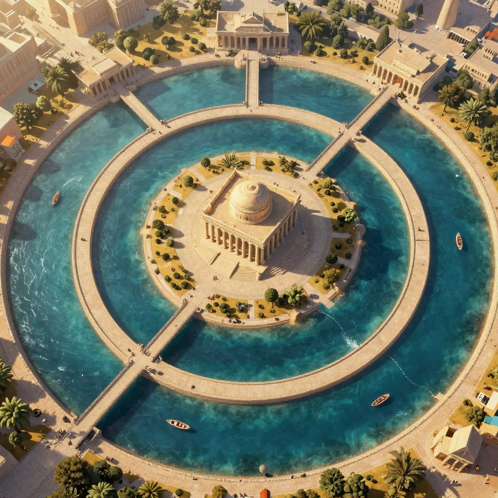
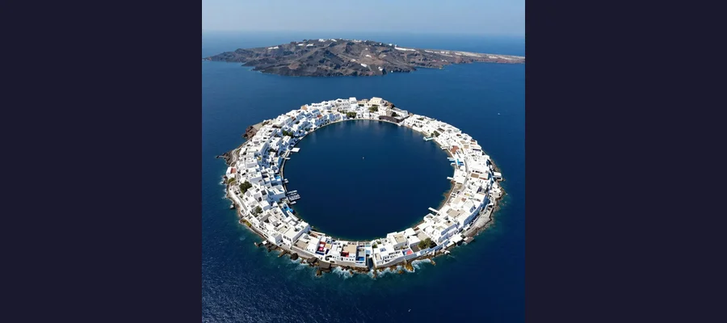

The Lost City of Atlantis: Myth, Memory, or the Greatest Cover-Up in History?

Plato described Atlantis 2,400 years ago as a great civilization that sank beneath the waves. New geological and archaeological evidence from Santorini, the Richat Structure, and underwater ruins keeps the debate alive.
Sometime around 360 BCE, the Greek philosopher Plato sat down to write a dialogue. He could not have known that the story he was about to tell would haunt the human imagination for the next 2,400 years. In two texts called Timaeus and Critias, Plato described a great island civilization located "beyond the Pillars of Hercules" (the Strait of Gibraltar) that possessed advanced engineering, powerful armies, and extraordinary wealth. This civilization, he wrote, existed 9,000 years before the time of Solon, the Athenian lawgiver who supposedly heard the account from Egyptian priests. Then, in a single catastrophic day and night of destruction, earthquakes and floods swallowed Atlantis beneath the sea, erasing it from the face of the earth.
That is the entirety of the primary source material. Two dialogues. One philosopher. No corroborating evidence from any other ancient text. And yet Atlantis has generated more books, expeditions, documentaries, and fevered speculation than almost any other mystery in human history. Over 2,500 books have been written about Atlantis in the last century alone. Google the word today and you will find roughly 200 million results. The question is not whether Atlantis is popular. The question is whether it was ever real.
The answer, like the lost continent itself, lies somewhere beneath the surface.
Plato's Time Bomb: The Account That Started It All
Understanding Atlantis begins with understanding what Plato actually wrote, because most of what people "know" about Atlantis comes not from Plato but from centuries of embellishment. The story appears in exactly two of his dialogues. In Timaeus, Plato provides a relatively brief overview: the island was larger than Libya and Asia combined, it lay in the Atlantic Ocean beyond the Pillars of Hercules, and it was destroyed by earthquakes and floods. In Critias, written as a sequel, he offers a far more detailed description of the island's geography, architecture, and society.
According to the Critias, Atlantis was a carefully engineered paradise. At its center stood a palace dedicated to the god Poseidon, surrounded by concentric rings of water and land connected by bridges and canals. The outer ring of water was three stadia wide (roughly 600 meters), and a canal 50 stadia long connected the rings to the open sea. The walls of the inner city were plated in orichalcum, a mysterious metal that "sparkled like fire." The island produced abundant crops, supported vast herds of elephants, and maintained an army of 10,000 chariots and a navy of 1,200 ships.
- 📜 Plato's account remains the only primary source for the Atlantis story; no other ancient civilization independently recorded it
- 🏛️ The story was supposedly told to Solon (c. 638–558 BCE) by Egyptian priests at the Temple of Neith in the Nile Delta
- 🗺️ Plato placed Atlantis beyond the Pillars of Hercules, the ancient name for the Strait of Gibraltar
- ⏰ The destruction was said to have occurred 9,000 years before Solon, placing it around 9600 BCE
- 🔥 The catastrophe involved "earthquakes and floods of extraordinary violence" occurring over "a single day and night"
📖 The Incomplete Sequel
Plato's Critias breaks off mid-sentence in the middle of describing Zeus's plan to punish the Atlanteans for their arrogance. The dialogue was never finished. Whether Plato died before completing it, deliberately left it unfinished as a philosophical statement, or simply lost interest remains unknown. The missing ending has fueled two millennia of speculation about what Plato intended to reveal.

Plato described Atlantis as having concentric rings of water and land connected by bridges and canals
Allegory or History?
Most classical scholars believe Atlantis was invented by Plato as a philosophical thought experiment, not described as a real place. The story's structure mirrors other Platonic allegories: a perfect society becomes corrupted and is punished by the gods, illustrating themes of hubris and divine justice. The Egyptian framing device was a common literary convention in Greek philosophy, lending exotic authority to invented narratives.
Several ancient writers explicitly treated Atlantis as fictional. Aristotle, Plato's own student, reportedly said of the island's creator: "He who invented it also destroyed it." The geographer Strabo wrote that anyone could create and then sink an island. Yet other ancient authors, including the historian Proclus in the 5th century CE, treated Atlantis as historical fact, and the debate has never been fully settled.
The Santorini Connection: When a Volcano Became a Legend
Of all the theories connecting Atlantis to a real location, the Santorini (Thera) eruption hypothesis has the most academic credibility. Around 1600 BCE, the volcanic island of Thera in the Aegean Sea erupted with a force estimated at 100 times more powerful than the Mount St. Helens eruption of 1980. The explosion blew the center of the island to pieces, creating the massive caldera that tourists visit today, and generated tsunamis that devastated the nearby island of Crete.
Crete was home to the Minoan civilization — a sophisticated Bronze Age culture with palatial architecture, indoor plumbing, vibrant art, and extensive maritime trade networks. The Minoans built multi-story palaces, most famously at Knossos, with hundreds of interconnected rooms, painted frescoes, and advanced drainage systems. When the tsunamis from Thera struck the coast of Crete, they destroyed Minoan port cities, devastated the fleet, and may have fatally weakened the civilization.
The parallels to Plato's Atlantis are striking: an advanced island civilization, a catastrophic destruction by water, and a sudden collapse. The Greek archaeologist Spyridon Marinatos first proposed the connection in 1939, and it has remained the dominant theory in academic circles ever since.
The Excavation of Akrotiri
In 1967, Marinatos began excavating the town of Akrotiri on Santorini itself, buried under volcanic ash since the eruption. What he found was astonishing: a remarkably preserved Bronze Age settlement with three-story buildings, colorful frescoes of ships and nature, and sophisticated drainage systems — a Pompeii of the Aegean. The ash had preserved everything in such extraordinary detail that wooden furniture, food stores, and even the imprints of woven textiles could be identified.
🌋 No Bodies at Akrotiri
Despite the catastrophic eruption, archaeologists found no human remains at Akrotiri, suggesting the population was successfully evacuated before the volcano struck. This evacuation is itself remarkable — it implies an early warning system or careful observation of volcanic precursors that gave people time to flee. It also means the Theran eruption, while devastating to Minoan infrastructure, may not have killed as many people as once assumed.

The Santorini caldera is the most credible real-world inspiration for the Atlantis legend
The Santorini theory has significant limitations, however. The timeline is off by millennia — Plato's 9600 BCE date versus Thera's 1600 BCE eruption is a gap of roughly 8,000 years. The location is wrong — Santorini is in the Aegean, not beyond the Pillars of Hercules. And the scale is wrong — the Minoan civilization was impressive but not the globe-spanning superpower Plato described. Scholars who support the theory generally argue that Plato (or Solon, or the Egyptian priests) inflated and distorted a real memory of the Minoan catastrophe over centuries of retelling, much like a game of telephone stretching across generations.
From the Sahara to the Seafloor: The Great Location Hunt
Atlantis has been "found" in more places than almost any other lost entity in history. Over 60 proposed locations have been seriously advanced by researchers, amateur archaeologists, and enthusiasts. Here are the most discussed:
The Richat Structure (Eye of the Sahara)
In the barren wastes of Mauritania, deep in the Sahara Desert, lies a geological formation so perfectly circular that astronauts have used it as a landmark since the earliest space missions. The Richat Structure, also called the Eye of the Sahara, is roughly 25 miles in diameter and features concentric rings of rock that bear a superficial resemblance to Plato's description of concentric water and land rings around Atlantis.
Internet advocates of this theory point to the matching dimensions, the central dome, and the surrounding terrain as evidence. Geologists, however, are unequivocal: the Richat Structure is a natural geological dome formed over 100 million years by uplift and erosion. There is no evidence of human habitation, no artifacts, no infrastructure, and no indication it was ever underwater. The concentric rings are rock strata, not canals. It is a beautiful coincidence, not a lost city.
Bimini Road and Underwater Mysteries
In 1968, divers off the coast of Bimini Island in the Bahamas discovered a massive formation of rectangular stone blocks lying on the seafloor in a remarkably regular pattern. The "Bimini Road" immediately ignited Atlantis speculation, especially because the American psychic Edgar Cayce had predicted in 1938 that portions of Atlantis would rise near Bimini in 1968 or 1969.
Geologists who studied the formation concluded that the blocks are naturally fractured beachrock, not man-made paving. The joint patterns, while regular-looking, match natural fracture patterns found in limestone worldwide. But the allure of underwater ruins is powerful, and the Bimini Road remains a fixture of Atlantis lore.
More compelling are genuine underwater archaeological sites. The ancient Egyptian port city of Heracleion, discovered beneath the Mediterranean in 2000 by archaeologist Franck Goddio, sank beneath the waves in the 8th century CE. While Heracleion has nothing to do with Atlantis, its discovery demonstrated that real cities do vanish underwater — a fact that keeps the Atlantis dream alive. The same is true of the sunken ruins discovered off the coast of Cuba in 2001 by a Canadian research team, though those formations have not been conclusively identified as man-made.
📜 Ignatius Donnelly: The Man Who Made Atlantis Famous
Atlantis might have remained a philosophical footnote if not for Ignatius Donnelly, a US Congressman from Minnesota who published Atlantis: The Antediluvian World in 1882. Donnelly argued that Atlantis was a real continent that served as the source of all human civilization — the origin of agriculture, language, and religion. His book was a sensation, selling hundreds of thousands of copies and spawning an entire industry of Atlantis speculation that continues to this day. Virtually every modern Atlantis theory traces its lineage back to Donnelly.
Why Atlantis Endures: The Myth We Need
The scientific consensus is clear: there is no credible archaeological or geological evidence for the existence of an advanced civilization matching Plato's description in the Atlantic Ocean during the timeframe he specified. The seafloor has been mapped in extraordinary detail by sonar, satellite, and submersible. No sunken continent has been found. The ocean floor is composed of basaltic crust, not continental rock, and the Atlantic was never dry land.
And yet Atlantis refuses to die. Why?
Part of the answer lies in the story's emotional structure. Atlantis is the ultimate cautionary tale: a perfect society destroyed by its own arrogance. That narrative has resonated across cultures and centuries because every civilization secretly fears it might be next. The story also satisfies a deep human desire to believe that something extraordinary might lie just beyond the horizon, waiting to be discovered — the same impulse that drives interest in the Bermuda Triangle and the sunken city of Heracleion.
Atlantis also persists because of a genuine archaeological mystery at its core. Bronze Age civilizations did collapse suddenly. The Minoans were devastated by a volcanic eruption and tsunamis. Cities have sunk beneath the waves, including Heracleion, Pavlopetri in Greece, and Dwarka off the coast of India. These real events give the Atlantis story a kernel of plausibility that pure fantasy lacks.
There is also the question of what we might call civilizational humility. The idea that an advanced culture could simply vanish — its knowledge, its art, its technology erased as if it had never existed — is genuinely unsettling. The ancient Greeks who listened to Plato's story lived amid the ruins of older civilizations. They understood impermanence. We, despite our satellites and smartphones, may understand it even better.
🎬 Atlantis in Pop Culture
Atlantis has appeared in over 200 films, 500 novels, and dozens of video games. From Jules Verne's 20,000 Leagues Under the Sea (1870) to Disney's Atlantis: The Lost Empire (2001) to the Marvel Cinematic Universe's underwater kingdom of Talokan, the lost civilization has proven endlessly adaptable. It represents something primal: the fear that even the greatest achievements can be swallowed by nature, and the hope that they might one day be recovered.
🌊 The Sea Keeps Its Secrets
Plato's Atlantis may have been a philosophical invention, a parable about hubris designed to illustrate the fate of corrupt societies. It may also, like many enduring myths, have been rooted in a distorted memory of real events — the destruction of the Minoan civilization by the Thera eruption, or some other Bronze Age catastrophe that echoed through oral tradition before being written down by a philosopher who understood the power of a good story. What is certain is that Atlantis has transcended its origins. It is no longer just a story about a sunken island; it is a mirror in which every generation sees its own anxieties about collapse, loss, and the fragility of civilization. As long as those fears persist, Atlantis will endure — not beneath the waves, but in the imagination.
Frequently Asked Questions
Did Atlantis actually exist?
The scientific consensus is that Atlantis as Plato described it did not exist. There is no geological evidence of a sunken continent in the Atlantic, no archaeological evidence of an advanced civilization dating to 9600 BCE, and the story appears in only one source: Plato's dialogues. However, many scholars believe Plato may have drawn inspiration from real historical catastrophes, particularly the Thera eruption and the collapse of Minoan civilization around 1600 BCE.
What is the most likely real inspiration for Atlantis?
The Santorini/Thera eruption theory is the most widely accepted among scholars. The volcanic explosion around 1600 BCE destroyed much of the island of Thera and devastated the Minoan civilization on Crete through tsunamis and ash fallout. The destruction of an advanced island maritime culture by a sudden catastrophe mirrors key elements of the Atlantis story, though the timeline, location, and scale differ significantly from Plato's account.
Why did Plato write about Atlantis?
Most classical scholars believe Atlantis was a philosophical allegory — a fictional counterpoint to Athens in a discussion about ideal governance. By creating a powerful rival civilization that was destroyed for its corruption, Plato illustrated his philosophical arguments about justice, hubris, and the relationship between moral behavior and societal survival. The story was never intended to be read as history.
Has anyone ever found evidence of Atlantis underwater?
Numerous underwater formations have been proposed as possible evidence, including the Bimini Road in the Bahamas and sonar anomalies off Cuba. However, all have been attributed to natural geological processes upon closer examination. Real underwater cities have been discovered — such as Heracleion in Egypt and Pavlopetri in Greece — but none match Plato's description of Atlantis in age, location, or scale.
Sources & References
- Wikipedia: Atlantis — Plato's dialogues, interpretations, and location hypotheses
- Britannica: Atlantis — Mythological island and philosophical allegory
- Wikipedia: Proposed Locations for Atlantis — Comprehensive survey of theories
- Akrotiri Museum: Atlantis and Santorini — Connecting Myths and Geology
- MIT Internet Classics: Plato's Critias — Full translated text
📖 Recommended Reading
Want to learn more? Check out Atlantis: The Antediluvian World by Ignatius Donnelly on Amazon — the 1882 classic that launched the modern Atlantis obsession. (As an Amazon Associate, we earn from qualifying purchases.)